The following pages give high level level directions for setting up Intune with basic Mac management capabilities.
It is assumed that you are already familiar with Intune and have existing Intune and Apple Business Manager instances set up and have logins with sufficient privilege to carry out the operations required.
In Apple Business Manager a managed Apple ID with either the Administrator or Device Enrollment Manager role is required to add an MDM. To add a Location and assign the content Manager Role the Administrator or People Manager role is required.
In Intune sign in as a member of the Global Administrator or Intune Service Administrator Entra ID roles
This section describes the essential setup information that links Intune to the various Apple Services needed to achieve Automated Device enrollment and ongoing device management
Apple Push Notification Services are critical to the operation of MDM. For any action the MDM needs to take such as issuing a command or installing a profile the initial communication with the device is via APNS.
To access the Intune UI, in a browser open https://intune.microsoft.com/ and log in with a Entra ID user ID that has the role of Global Administrator or Intune Service Administrator for your tenancy
Navigate to Devices -> macOS -> macOS Enrollment
Click Apple MDM Push Certificate
Check the box granting permission to send information to Apple
Click on Download your CSR
In a new browser window or tab open https://identity.apple.com/pushcert/ and log in with a managed Apple ID.
Do not use a personal Apple ID for this process as management the APNS certificate will be critical over the life of your device management solution and access via a personal Apple ID may become unavailable as staff change over time. Using a Managed Apple ID keeps control within the Apple Business Manager (or Apple School Manager) instance.
Click Create a Certificate
Upload the CSR, create and download the certificate
You can log out and close this window/tab
Return to the Intune UI
Under Apple ID Enter the Managed Apple ID you used to log in and create the certificate
Under Apple MDM push certificate Select the certificate you just downloaded then click Upload
The Microsoft Documentation for this procedure is at https://learn.microsoft.com/en-us/mem/intune/enrollment/apple-mdm-push-certificate-get
The Device Enrollment token enables secure communication between Apple Business Manager or Apple School Manager and the MDM to allow for Automated Device Enrollment.
In the Intune UI
Navigate to Devices -> iOS/iPadOS -> iOS/iPadOS Enrollment
(Devices -> macOS -> macOS Enrollment will also work)
Click Enrollment program tokens
Click on + Add to add a new token
Check the box granting permission to send information to Apple
Click on Download your public key
To access Apple Business Manager open a new browser window or tab and navigate to https://business.apple.com and log in with a Managed Apple ID that has the role of Administrator or Device Enrolment Manager
Click your name at the bottom of the sidebar, and click Preferences
Under Your MDM Servers click the plus sign to + Add
Name your MDM server and upload the Public Key
Download the Server Token by clicking on Download Token then clicking Download Server Token
In the Intune UI
Under Apple ID enter the Managed Apple ID you used to log in and
create the Server Token
Under Apple token select the Server Token just downloaded then click Next then click Create
The Microsoft Documentation for this procedure is at
https://learn.microsoft.com/en-us/mem/intune/enrollment/device-enrollment-program-enroll-ios
The Apps and Books Token (previously known as the Volume Purchase Program or VPP token) enables secure communication between Apple Business Manager or Apple School Manager and the MDM for the management of Apps and Book licensing
In Apple Business Manager
In the sidebar click Locations
Click the plus sign to + Add
Enter the details and create the new location
Click your name at the bottom of the sidebar, and click Preferences
Click Payments and Billing
Find the location you just created under Server Tokens and download the VPP token by clicking Download
In the Intune UI
Navigate to Tenant administration -> Connectors and tokens -> Apple VPP Tokens
Click + Create to Create VPP Token
Under Token Name give the Token the same name used in ABM
Enter the Managed Apple ID used to create the VPP token in ABM
Upload the token file and click Next
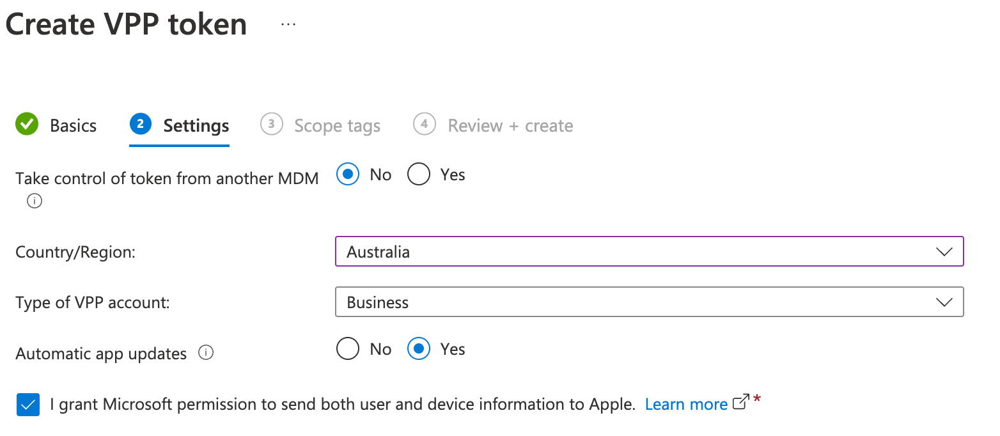
Click through to complete the process.
You can ignore the Scope Tags page for this exercise
The Microsoft Documentation for this procedure is at
https://learn.microsoft.com/en-us/mem/intune/apps/vpp-apps-ios
The Device Enrollment Profile is created by the MDM and synchronised with Apple Business Manager or Apple School Manager to enable the Automated Device Enrolment process. A Device Enrollment Profile is created and assigned to one or more devices. Upon activation that profile will be installed on the device which will provide certificates and the URL of the MDM that will manage the device. A list of Setup Assistant items to hide from the user is also provided.
In Apple Business Manager
In the sidebar click Apps and Books
Search for Microsoft Intune Company Portal and select it.
Under Buy Licenses select the location corresponding to your Intune instance and specify 2 in the quantity then click Get
NOTE: Company Portal is Deployed automatically as part of AutomatedDevice Enrolment. It is a pre requisite that VPP licenses are available for this to work but it is currently not necessary to separately scope the app to the required devices. This will change in future.
In the Intune UI
Ensure the app appears in the list under Apps -> iOS/iPadOS apps
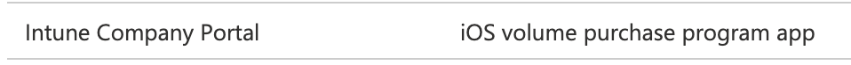
NOTE: It may be necessary to force synchronisation after the ABM app purchase
In the Intune UI
Navigate to Tenant administration -> Connectors and tokens -> Apple VPP Tokens
Right click on the token name and select Sync
Navigate to Devices -> iOS/iPadOS -> iOS/iPadOS Enrollment
Click Enrollment program tokens
Click the token you created from the list
Under Manage click Profiles
Click + Create Profile -> iOS/iPadOS
Complete the config as follows:
Name the profile e.g. iOS ADE with MFA then click Next
Settings should be as follows:
User affinity = Enroll with User Affinity
Authentication Method = Setup Assistant with modern authentication
Locked Enrollment = Yes
Await Final Configuration = Yes
Other settings can be default
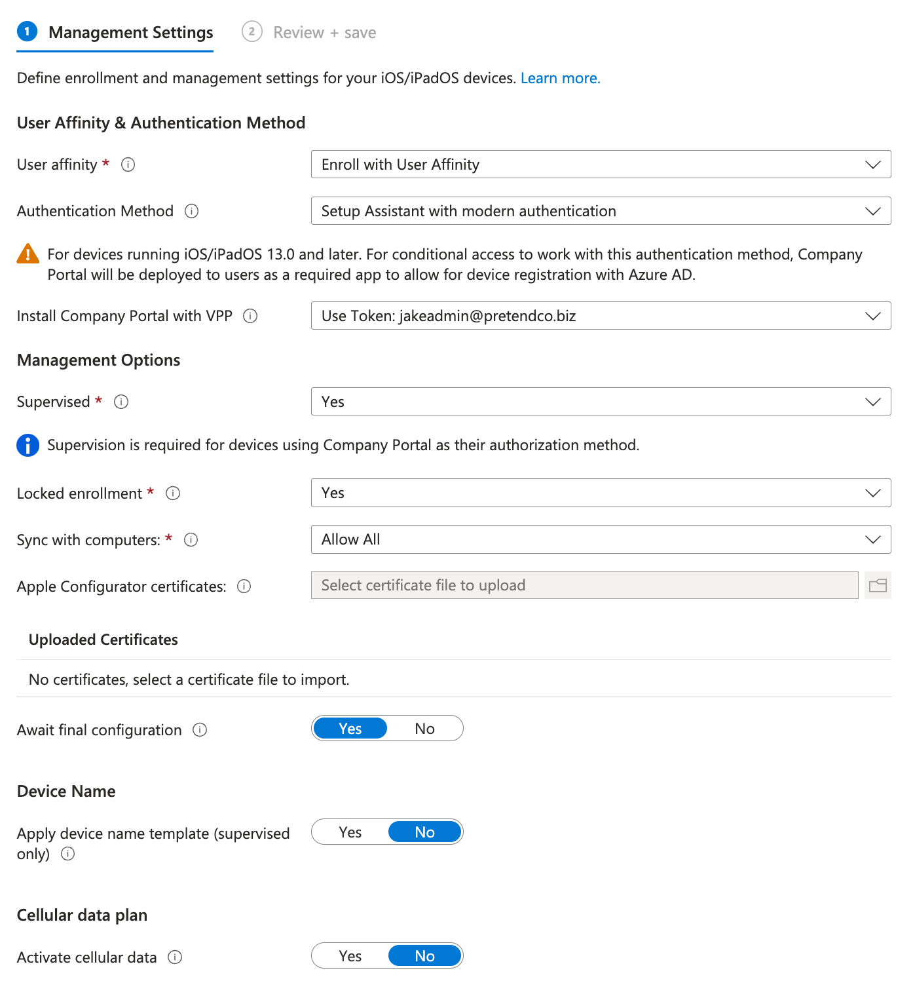
Enter a department Name and Phone Number and toggle all setup assistant screens to Hide except
Passcode = Show
Location Services = Show
Touch ID and Face ID = Show
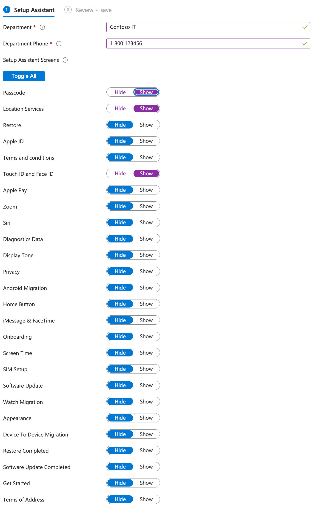
Save the enrolment profile
Click Set default profile and set the just created profile as the default for iOS/iPadOS
Create a few essential configuration profiles. The method is the same in each case with one possible key difference. Use of a Template or the Setting catalogue.
Setting a Compliance Policy creates a configuration profile and also implements a corresponding compliance check in Intune. This policy is used to ensure a device passcode is set with appropriate complexity.
https://learn.microsoft.com/en-us/mem/intune/protect/compliance-policy-create-ios
In the Intune UI
Navigate to Devices -> iOS/iPadOS -> Compliance Policies
Click + Create to Create a new policy then Create a Policy Create
Give the policy a name e.g. Passcode then click Next
Under System Security
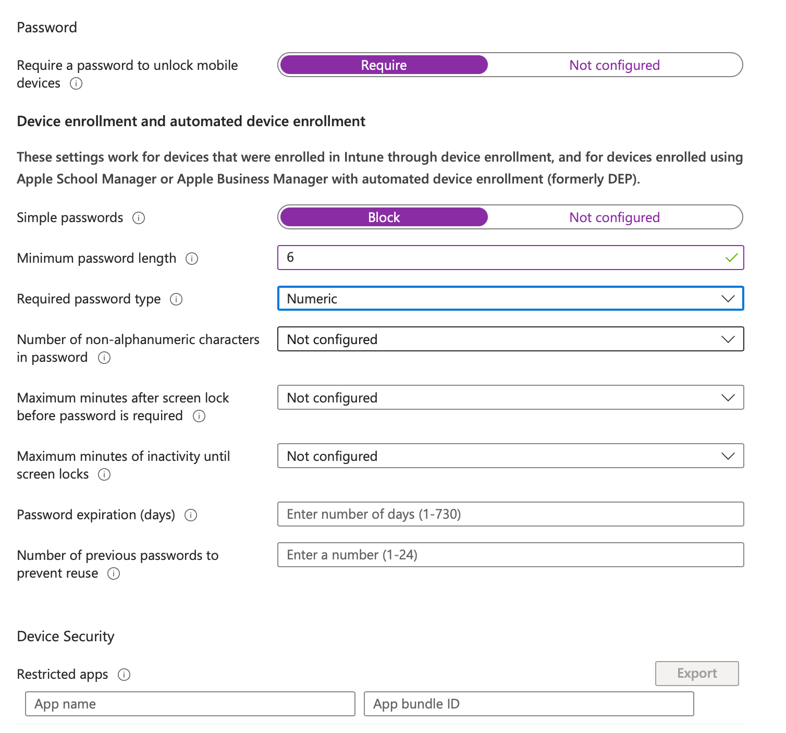
Click + Add all devices
Click Next
Click Create
The Managed Open profile is used to implement the Managed Open In controls on iOS and iPadOS that limit the flow of data between managed and unmanaged apps.
In the Intune UI
Navigate to Devices -> iOS/iPadOS -> Configuration Profiles
Click + Create profile to Create a new profile
Click Profile Type - Settings Catalogue then Create
Give the profile a name e.g. Managed Open In then click Next
Click + Add settings and choose Restrictions and select the settings in the screenshot below and close the Settings Picker
Set the values to True or False as shown
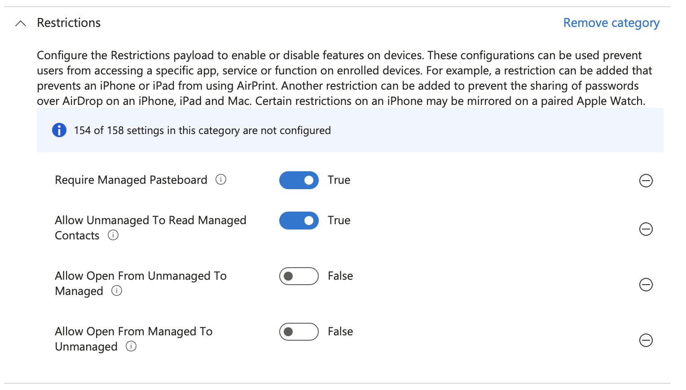
Click Next then on Scope Tags click Next
In Assignments Click + Add all devices
Click Next then Click Create
The Single Sign On profile enables the use of Apple's Extensible Single Sign On framework in conjunction with the Entra ID SSO Extension to reduce the burden on users logging in while maintained strong authentication and authorisation using modern authentication protocols. This also requires that Microsoft Authenticator is installed on the device.
*In the Intune UI
Navigate to Devices -> iOS/iPadOS -> Configuration Profiles
Click + Create profile to Create a new profile
Click Profile Type - Settings Catalogue then Create
Give the profile a name e.g. Entra ID SSO then click Next
Click + Add settings and choose Authentication -> Extensible Single Sign On (SSO) and select the settings in the screenshot below and close the Settings Picker
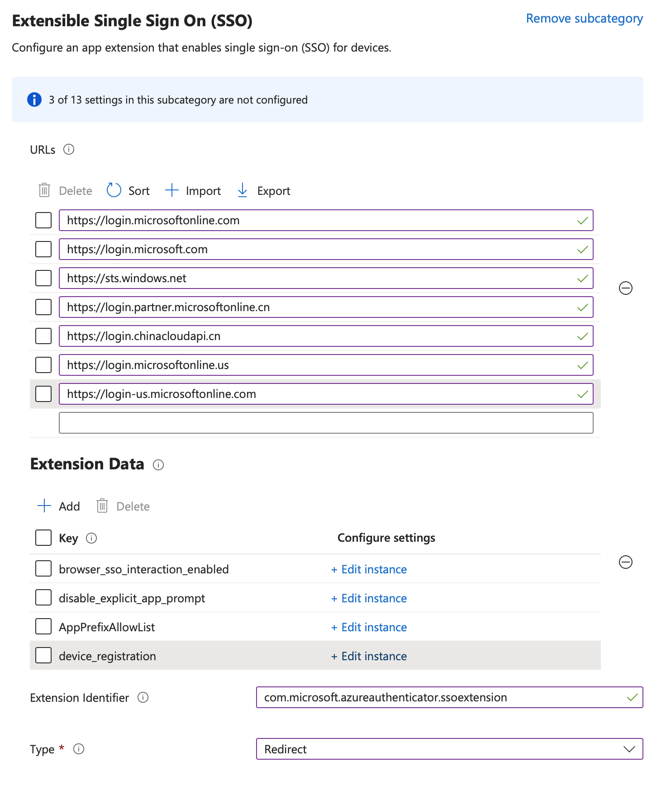
| Key | Type | Value |
|---|---|---|
| browser_sso_interaction_enabled | Integer | 1 |
| disable_explicit_app_prompt | Integer | 1 |
| AppPrefixAllowList | String | com.microsoft.,com.apple. |
| device_registration | String | {{DEVICEREGISTRATION}} |
Click Next then on Scope Tags click Next
In Assignments Click + Add all devices
Click Next then Click Create
The Email profile will add an account the the native iOS Mail app on behalf of the user.
In the Intune UI
Navigate to Devices -> iOS/iPadOS -> Configuration Profiles
Click + Create profile to Create a new profile
Click Profile Type - Templates then Email then Create
Give the profile a name e.g. Exchange Online then click Next
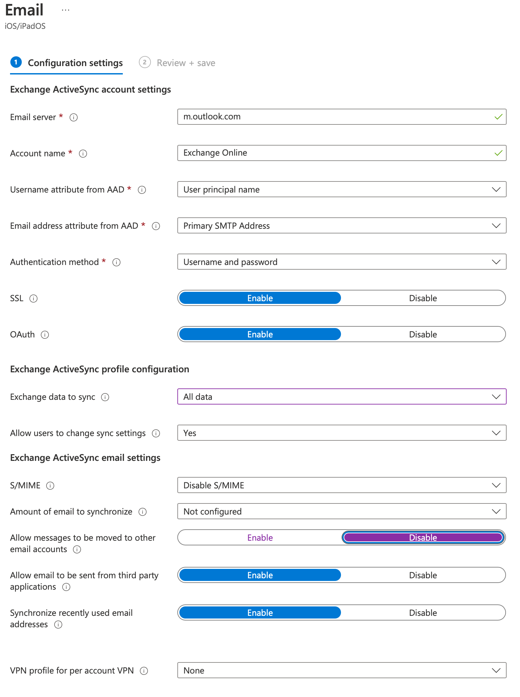
Click + Add all devices
Click Next
Click Create
In Apple Business Manager
In the sidebar click Apps and Books
Search for Microsoft Authenticator and select the iOS version
Under Buy Licenses select the location corresponding to your Intune instance and specify 10 in the quantity then click Get
In the Intune UI
Navigate to Apps -> iOS/iPadOS
Select Microsoft Authenticator from the list of available apps. If it is not listed try clicking Refresh
Click on Properties
Click on Assignments Edit and assign the app under Required -> + Add all devices then Review + save
Repeat the above process to deploy additional apps such as Microsoft Teams and OneDrive and Workday
You can make apps appear as optional installs within the Company Portal
pp by assigning them as Available for enrolled devices rather than Required
NOTE: It may be necessary to force synchronisation after the ABM app purchase
In the Intune UI
Navigate to Tenant administration -> Connectors and tokens -> Apple VPP Tokens
Right click on the token name and select Sync
These settings are app specific and control, behaviour of the specific apps as determined by the app developer. The example below sets the UPN used by Teams based on the user that enrolled the device
In the Intune UI
Apps -> App Configuration Policies
Click + Add -> Managed Devices
Give the policy a name e.g. Teams UPN
Select Platform iOS/iPadOS
Targeted App -> Select Microsoft Teams
Click Next
Configuration settings format -> select Use configuration designer
Enter values as follows:
| Key | Type | Value |
|---|---|---|
| IntuneMAMAllowedAccountsOnly | String | Enabled |
| IntuneMAMUPN | String | {{userprincipalname}} |
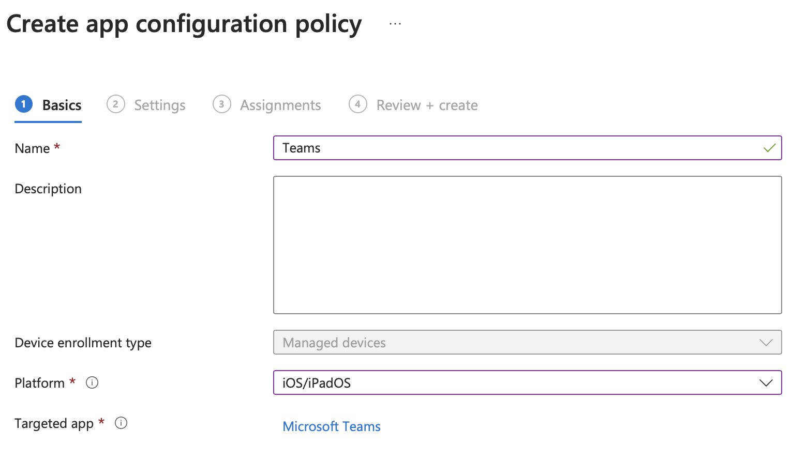
Set Scope to All devices
Click Next
Click Create
In Apple Business Manager
From the sidebar click Devices
Search for the serial number of the iPhone you will enrol and select it
Click Edit MDM Server
Click Assign the Following MDM and choose the appropriate MDM from the drop down list then click Continue
In the Intune UI
Navigate to Devices -> iOS/iPadOS -> iOS/iPadOS Enrollment
Click Enrollment program tokens
Select the token you created from the list
Under Manage click Devices
If the device you assigned from ABM is not listed click Sync, wait a minute and click Refresh
Check the box next to the device(s) in the list that you wish to apply an ADE profile then click Assign Profile
Under Assign Profile select the appropriate enrolment profile from the drop down list
Click Sync to sync with ABM. This can be done only after 15 mins or more from the last manual sync.
You can now test the enrolment process on the iPhone you have assigned
The Device Enrollment Profile is created by the MDM and synchronised with Apple Business Manager or Apple School Manager to enable the Automated Device Enrolment process. A Device Enrollment Profile is created and assigned to one or more devices. Upon activation that profile will be installed on the device which will provide certificates and the URL of the MDM that will manage the device. A list of Setup Assistant items to hide from the user is also provided.
In the Intune UI
Navigate to Devices -> macOS -> macOS Enrollment
Click Enrollment program tokens
Click the token you created from the list
Under Manage click Profiles
Click + Create Profile -> macOS
Complete the config as follows:
Name the profile e.g. macOS ADE with MFA
User affinity = Enroll with User Affinity
Authentication Method = Setup Assistant with modern authentication
Locked Enrollment = Yes
Enter a department Name and Phone Number and toggle all setup assistant
screens to Hide except
Location Services = Show
Touch ID and Face ID = Show
Configure Account Settings
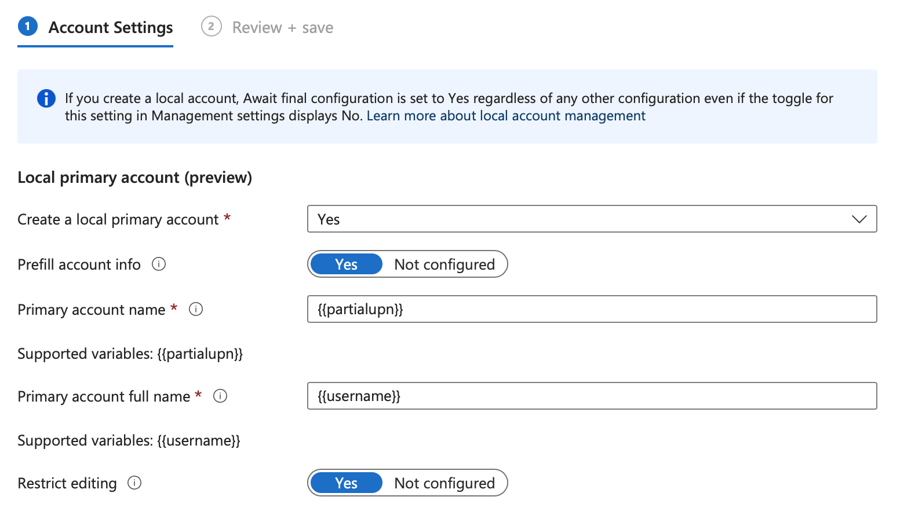
Click Create
Click Set default profile and set the just created profile as the default for macOS
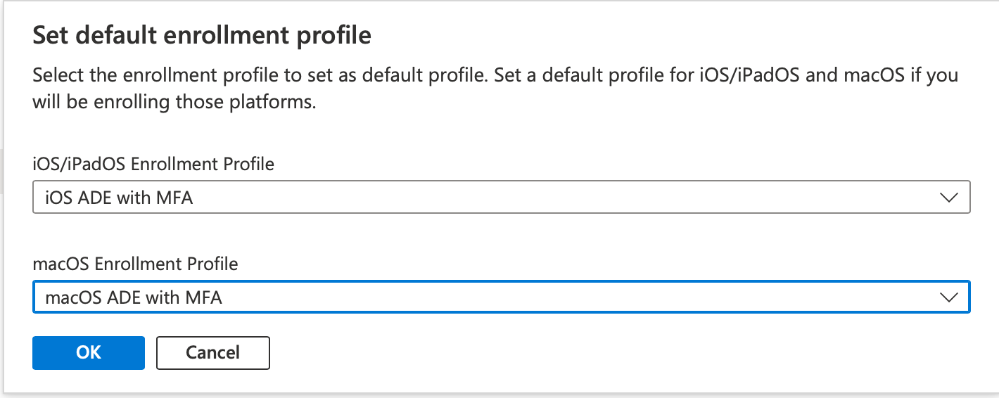
Create a few essential configuration profiles. The method is the same in each case with one possible key difference. Use of a Template of the Setting catalogue. An example of each is given.
For configuration profiles created using the Settings Catalogue there is an Export JSON capability. There is a corresponding capability to select Import Policy as an option when creating a new configuration profile so previous configs can be reused.
This profile enables FileVault full disk encryption.
In the Intune UI
Navigate to Devices -> macOS -> Configuration Profiles
Click + Create to Create a new profile
Click Profile Type - Settings Catalogue then Create
Give the profile a name e.g. FileVault then click Next
Click + Add settings and choose Full Disk Encryption and select the settings in the screenshot below and close the Settings Picker.
Make the selections as shown
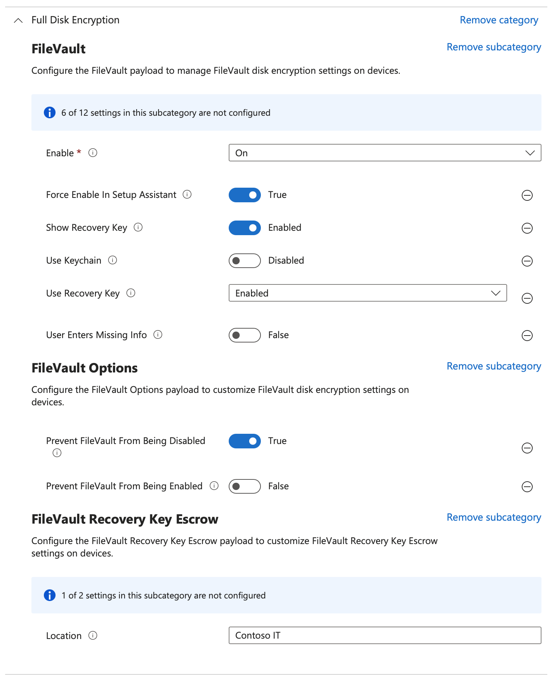
Click Next then on Scope Tags click Next
In Assignments Click + Add all devices
Click Next then Click Create
This profile enables the built in macOS Application Firewall
In the Intune UI
Navigate to Devices -> macOS -> Configuration Profiles
Click + Create to Create a new profile
Click Profile Type - Settings Catalogue then Create
Give the profile a name e.g. Firewall then click Next
Click + Add settings and choose Networking -> Firewall and select the settings in the screenshot below and close the Settings Picker
Make the selections as shown
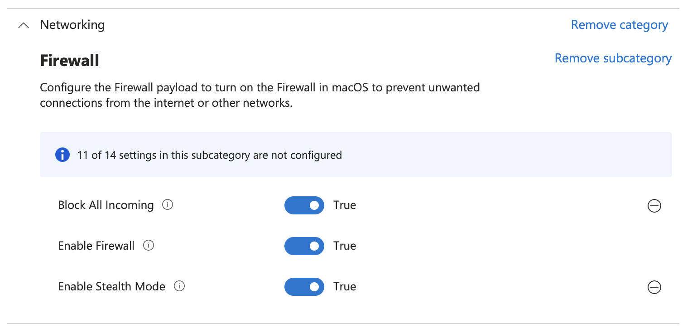
Click Next then on Scope Tags click Next
In Assignments Click + Add all devices
Click Next then **** Click Create
This profile enables Gatekeeper to ensure only trusted apps can launch**on macOS
In the Intune UI
Navigate to Devices -> macOS -> Configuration Profiles
Click + Create to Create a new profile
Click Profile Type - Settings Catalogue then Create
Give the profile a name e.g. Gatekeeper then click Next
Click + Add settings and choose setting from App Store, System Policy and select the settings in the screenshot below and close the Settings Picker
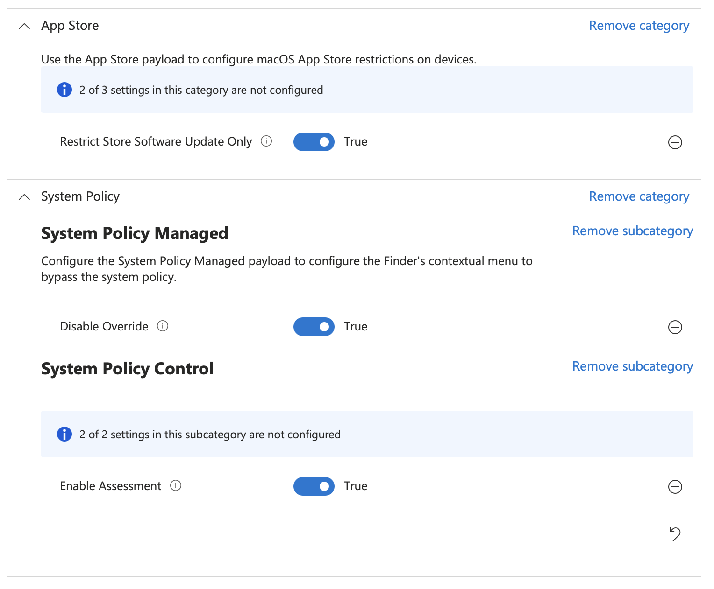
Click Next then on Scope Tags click Next
In Assignments Click + Add all devices
Click Next then Click Create
The Single Sign On profile enables the use of Apple's Extensible Single Sign On framework in conjunction with the Entra ID SSO Extension to reduce the burden on users logging in while maintained strong authentication and authorisation using modern authentication protocols. This also requires that Company Portal is installed on the device.
In the Intune UI
Navigate to Devices -> macOS -> Configuration Profiles
Click + Create to Create a new profile
Click Profile Type - Settings Catalogue then Create
Give the profile a name e.g. Entra ID SSO then click Next
Click + Add settings and choose Authentication -> Extensible Single Sign On (SSO) and select the settings in the screenshot below and close the Settings Picker
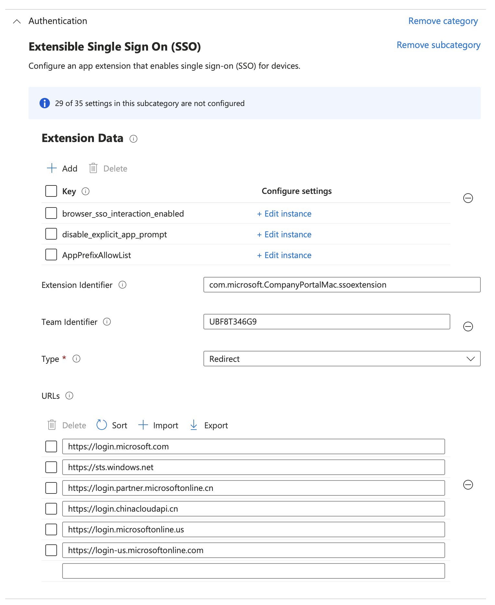
| Key | Type | Value |
|---|---|---|
| browser_sso_interaction_enabled | Integer | 1 |
| disable_explicit_app_prompt | Integer | 1 |
| AppPrefixAllowList | String | com.microsoft.,com.apple. |
Click Next then on Scope Tags click Next
In Assignments Click + Add all devices
Click Next then Click Create
This sets some parameters for Office 365 including the default user for**licensing
In the Intune UI
Navigate to Devices -> macOS -> Configuration Profiles
Click + Create to Create a new profile
Click Profile Type - Settings Catalogue then Create
Give the profile a name e.g. Office 365 Parameters then click Next
Click + Add settings and choose Microsoft Office -> Microsoft Office then click the Enable Automatic sign-in and Office Activation Email Address checkboxes and close the Settings Picker
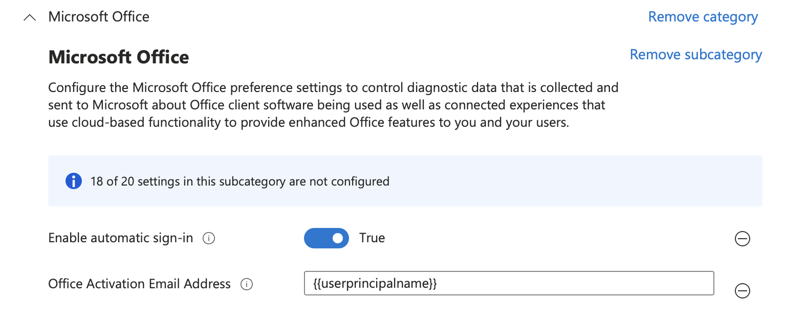
Under Assignments click +Add all devices
This profile sets the configuration of the Support App which we will install as part of this setup.
Create a custom config for the Support app as per the documentation on the developers web site
This can be done with a text editor or a tool like iMazing Profile editor.
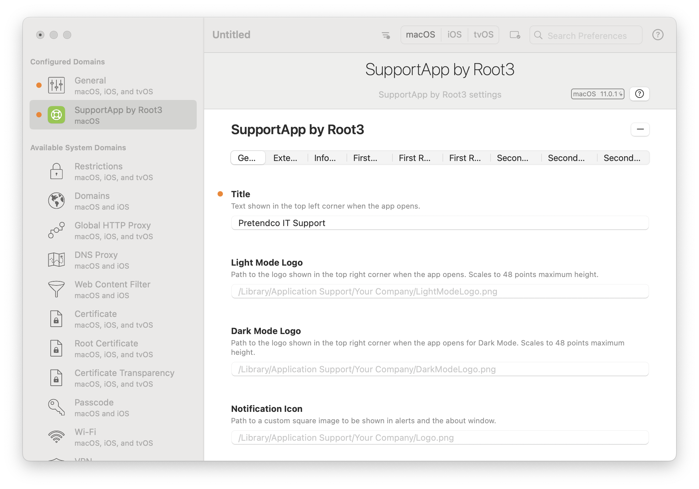
In the Intune UI
Navigate to Devices -> macOS -> Configuration Profiles
Click + Create to Create a new profile
Click Profile Type -> Templates then Custom then Create
Give the profile a name e.g. Support App Config then click Next
For Custom configuration profile name enter Support App Config
Set Deployment Channel to Device Channel
Upload the Custom Configuration profile file. Use filename Suppport_Intune.mobileconfig
Under Assignments click +Add all devices
Any background items that run upon a device boot or at user login including Launch Daemons, Launch Agents and Open at Login Apps can be deactivated by an Admin user. In order to prevent these items being deactivated a Managed Login Items config profile is deployed.
In the Intune UI
Navigate to Devices -> macOS -> Configuration Profiles
Click + Create to Create a new profile
Click Profile Type - Settings Catalogue then Create
Give the profile a name e.g. Background and Login Items then click Next
Click + Add settings and choose Login -> Service Management - Managed Login Items then check all but Team Identifier and close the Settings Picker
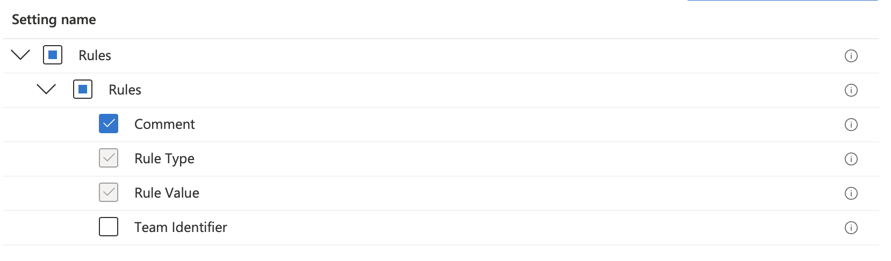
Enter the following values:
| Comment | Rule Type | Rule Value | Team Identifier |
|---|---|---|---|
| Microsoft Apps | Bundle Identifier Prefix | com.microsoft | Not Configured |
| Microsoft Daemons | Label Prefix | com.microsoft | Not Configured |
| Support App | Label | nl.root3.support | Not Configured |
Under Assignments click +Add all devices
Company Portal is required for a number of functions. These include device registration with Azure AD, a self Service App catalogue and provision of the Azure AD SSO Extension code.
In a new browser window or tab open https://github.com/microsoft/shell-intune samples/blob/master/macOS/Apps/Company%20Portal/installCompanyPortal.zsh
Copy the contents of the zsh script, paste in to a text editor and save the file as InstallCompanyPortal.zsh
In the Intune UI
Navigate to Devices -> macOS -> Shell Scripts
Click + Add
Name the Script e.g. Install Company Portal and click Next
Upload the saved InstallCompanyPortal.zsh file and set the parameters as
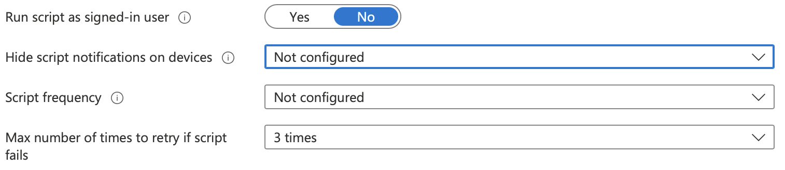
Under Assignments click +Add all devices
In the Intune UI
Navigate to Apps -> macOS
Click +Add
From the App type drop down list select Microsoft 365 Apps / macOS
Under Assignments click +Add all devices under REQUIRED
The Support App helps an the end user get quick access to basic device information and apps needed when receiving support from IT.
This package has been created and signed by the developer so can be uploaded and deployed by Intune.
Intune supports two methods to deploy .pkg files. In this example we will use the Line-of-business method that leverages the MDM command InstallEnterpriseApplication.
Download the latest packaged version of the Support app from https://github.com/root3nl/SupportApp/releaseshttps://github.com/root3nl/SupportApp/releases
In the Intune UI
Apps -> macOS
Click + Add
From the drop down menu select Other -> Line-of-business app
Upload the Support App package file Support.x.x.pkg
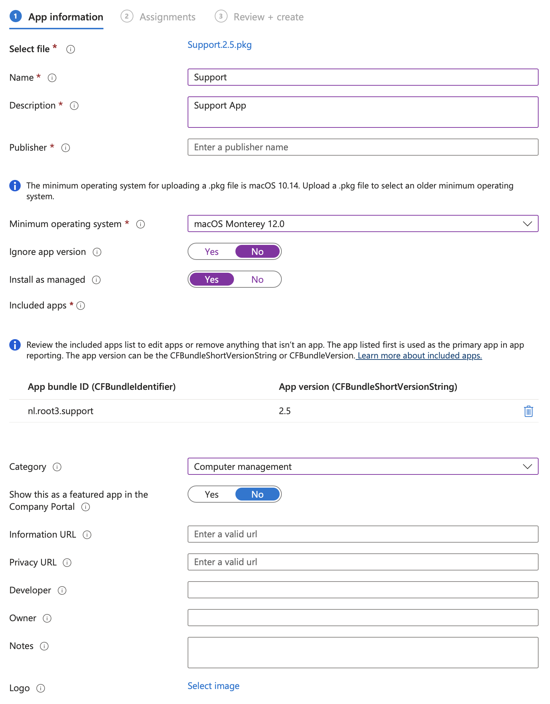
Under Assignments click +Add all devices
The SAP privileges App helps an Admin user manage their risk by allowing them to demote themselves to a Standard user when having Admin privileges is not required
Download the latest version of the SAP Privileges tool from https://github.com/SAP/macOS-enterprise-privileges
On a Mac install Privileges in the Applications folder
Use the Packages App to create a file called Privileges.pkg
In the Intune UI
Apps -> macOS
Click +Add
From the drop down menu select macOS app (PKG)
Upload the .pkg file
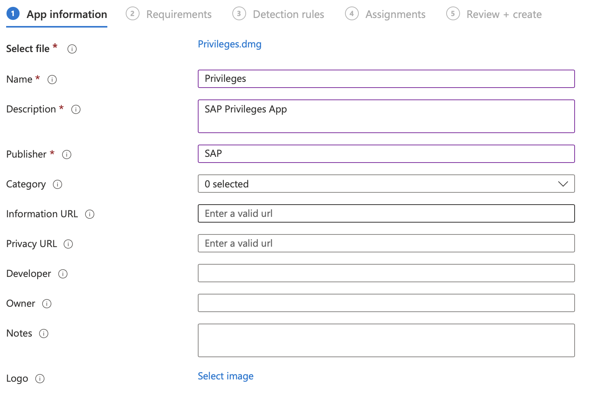
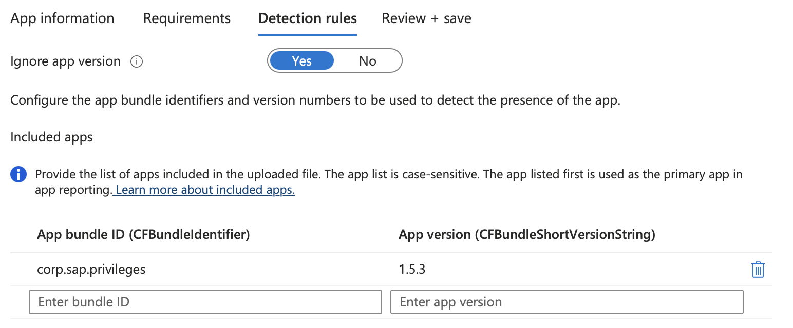
Under Assignments click +Add all devices
In Apple Business Manager
In the sidebar click Apps and Books
Search for Slack for Desktop and select the macOS version
Under Buy Licenses select the location corresponding to your Intune instance and specify 10 in the quantity then click Get
In the Intune UI
Apps -> macOS
Select Slack for Desktop from the list of available apps. If it is not listed try clicking Refresh
Under Properties -> Assignments click Edit and click +Add all devices
In order to use a custom image as the Mac Wallpaper the image file needs to be installed on the device. There are multiple methods to then set this image as the Wallpaper. This example uses a custom package to install the images and run a post install script to set the Wallpaper.
Create the .pkg file using a tool such as Packages from Whitebox. Include a post install script with the following content:
#!/bin/zsh
osascript -e 'tell application "Finder" to set desktop picture to POSIX file "/usr/local/wallpaper/Pretendco_Demokit_Dark.png"'
In the Intune UI
Apps -> macOS
Click + Add
From the drop down menu select Other -> macOS App (PKG)
*The user would normally be prompted to approve the MDM Agent setting the Wallpaper so we deploy a PPPC Profile. This can be created using the Jamf PPPC Utility as follows. Save the profile as IntunePPPC.mobileconfig
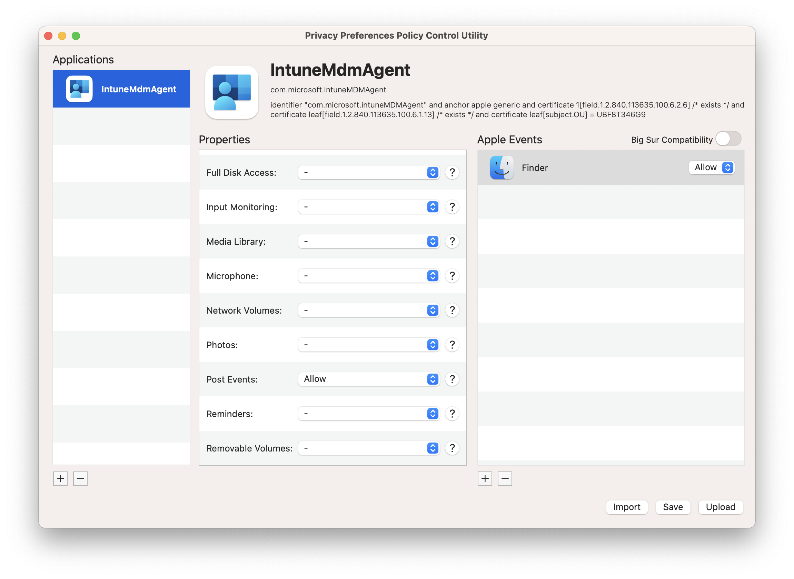
In the Intune UI
Navigate to Devices -> macOS -> Configuration Profiles
Click + Create to Create a new profile
Click Profile Type -> Templates then Custom then Create
Give the profile a name e.g. Intune Agent PPPC then click Next
For Custom configuration profile name enter Intune to Finder PPPC
Set Deployment Channel to Device Channel
Upload the Custom Configuration profile file. Use filename IntunePPPC.mobileconfig
Under Assignments click +Add all devices
Intune can implement Compliance Policies which are evaluated as true orfalse. This calculated state can be used by Azure AD Conditional Access polices to determine whether a user can access certain cloud based**resources from the device.*
In the Intune UI
Navigate to Devices -> macOS -> Compliance policies
Click + Create policy to Create a new policy
Give the profile a name e.g. Basic Compliance then click Next
Set the following:
Device Health -> Require System Integrity Protection to Require
System Security -> Device Security -> Firewall to Enable
System Security -> Device Security -> Incoming Connections to Block
System Security -> Device Security -> Stealth Mode to Enable
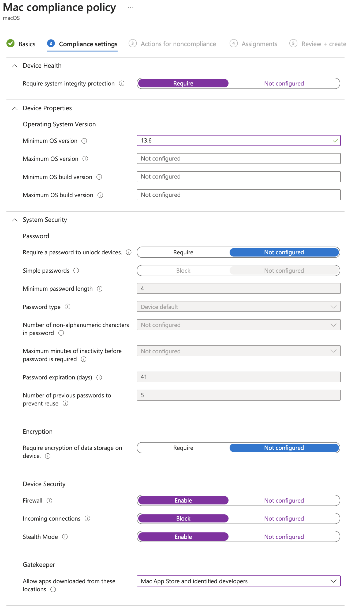
Set the Action to Mark device noncompliant and the Schedule to Immediately
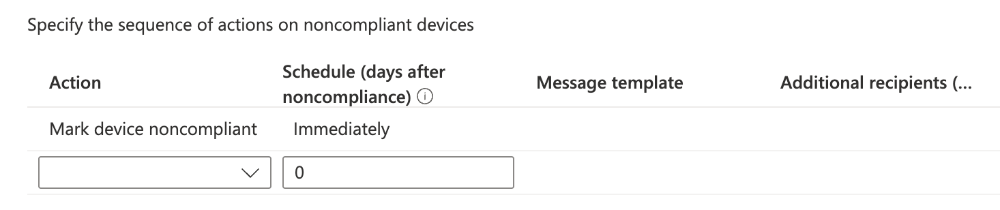
Under Assignments click +Add all devices
In Apple Business Manager
From the sidebar click Devices
Search for the serial number of the Mac you will enrol and select it
Click Edit MDM Server
Click Assign the Following MDM and choose the appropriate MDM from the drop down list then click Continue
In the Intune UI
Navigate to Devices -> macOS -> macOS Enrollment
Click Enrollment program tokens
Select the token you created from the list
Under Manage click Devices
If the device you assigned from ABM is not listed click Sync, wait a minute and click Refresh
Check the box next to the device(s) in the list that you wish to apply an ADE profile then click Assign Profile
Under Assign Profile select the appropriate enrolment profile from the drop down list
Click Sync to sync with ABM. This can be done only after 15 mins or more from the last manual sync.
You can now test the enrolment process on the Mac you have assigned
Check profiles in the settings app.
Once Company Portal is installed launch it and log in. The device should appear non compliant.
Log out and back in again enabling FileVault in the process.
Log back into Company Portal and see the device is now compliant
Launch Apps, open https://portal.office.com in Safari and add Exchange account to Mail.
In the Intune UI
Navigate to Devices -> macOS -> Update policies for macOS
Click + Create to Create a new profile
Give the profile a name then click Next
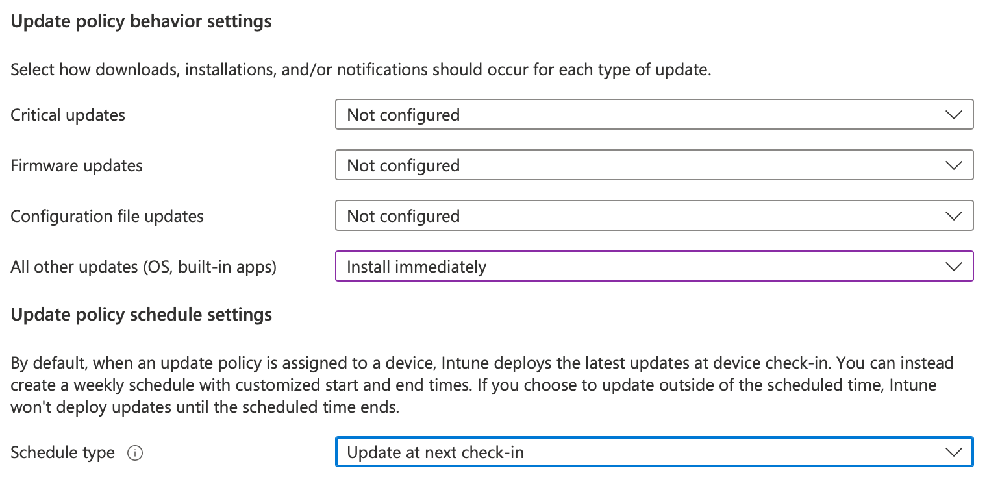
In the Intune UI
Navigate to Devices -> macOS -> Configuration Profiles
Click + Create to Create a new profile
Click Profile Type - Settings Catalogue then Create
Give the profile a name e.g. macOS Software Update then click Next
Click + Add settings and choose Declarative Device Management (DDM) -> Software Update then check Local Date and Time and Target OS Version and close the Settings Picker
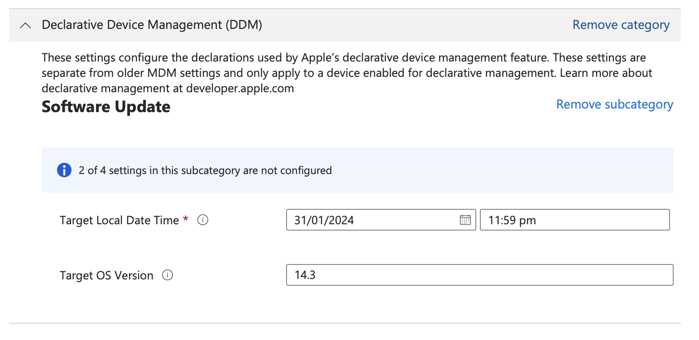
In the Intune UI
Navigate to Devices -> macOS
Select the relevant Mac from the list of devices
Click Recovery Keys then Show Recovery Key
In the Intune UI
Navigate to Devices -> macOS
Select the relevant Mac from the list of devices
Click X Erase
Enter any Recovery PIN then click Erase
When you run the Mac Evaluation Utility on a Mac there is a category Mac Management -> Security with a number of items that are evaluated. The following profiles can help achieve a Success status for some of these items.
Navigate to Devices -> macOS -> Configuration Profiles
Click + Create to Create a new profile
Click Profile Type -> Settings Catalogue then Create
Give the profile a name e.g. Disable Guest Account then click Next
Click + Add settings and choose Accounts -> Accounts -> Disable Guest Account
Then set Disable Guest Account to True
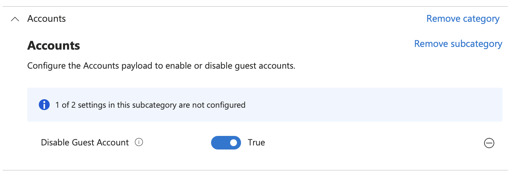
In the Intune UI
Navigate to Devices -> macOS -> Configuration Profiles
Click + Create to Create a new profile
Click Profile Type -> Templates then Custom then Create
Give the profile a name e.g. Disable Auto Login then click Next
For Custom configuration profile name enter Disable Auto Login
Set Deployment Channel to Device Channel
Upload the Custom Configuration profile file
Assign to All Devices
<?xml version=”1.0” encoding=”UTF-8”?>
<!DOCTYPE plist PUBLIC “-//Apple//DTD PLIST 1.0//EN” “http://www.apple.com/DTDs/PropertyList-1.0.dtd”>
<plist version=”1.0”>
<dict>
<key>PayloadContent</key>
<array>
<dict>
<true/>
<key>com.apple.login.mcx.DisableAutoLoginClient</key>
</dict>
</array>
<key>PayloadDisplayName</key>
<string>Login Window</string>
<key>PayloadIdentifier</key>
<string>com.example.myprofile</string>
<key>PayloadType</key>
<string>Configuration</string>
<key>PayloadUUID</key>
<string>61bd7d63-4a4a-4b67-9112-5ceb16afb4dc</string>
<key>PayloadVersion</key>
<integer>1</integer>
</dict>
</plist>
Navigate to Devices -> macOS -> Configuration Profiles
Click + Create to Create a new profile
Click Profile Type -> Settings Catalogue then Create
Give the profile a name e.g. Screensaver Lock then click Next
Click + Add settings and choose System Configuration -> Screensaver -> Select all these settings
Module Name =
Login Window Module Path = /System/Library/
Login Window Idle Time = Preferred Value
Ask For Password Delay = Preferred Value
Ask For Password = True
NOTE: Be sure to set this via the Settings Catalogue and not via a Template
Navigate to Devices -> macOS -> Configuration Profiles
Click + Create to Create a new profile
Click Profile Type -> Settings Catalogue then Create
Give the profile a name e.g. Passcode Policy then click Next
Click + Add settings and choose Security -> Passcode -> Needed Settings based on company security policy
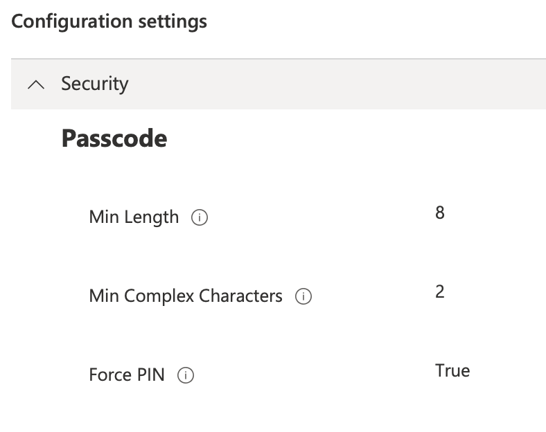
Get Apple MDM push certificate
Microsoft Enterprise SSO plug-in for Apple devices
macOS Configuration - See Settings for macOS
Use shell scripts on macOS devices in Microsoft Intune
Deploying macOS apps with the Microsoft Intune scripting agent
Sample shell scripts for macOS
Munki - Software Management for OS X
Comprehensive guide to managing macOS with Intune - A bit out of date but useful